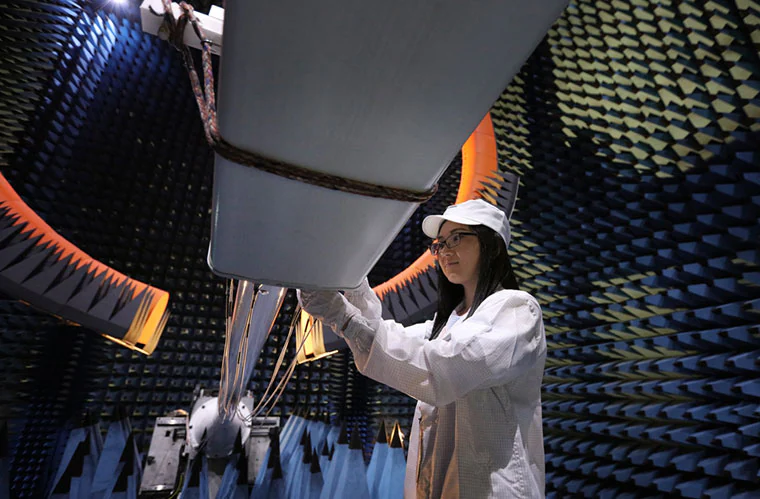
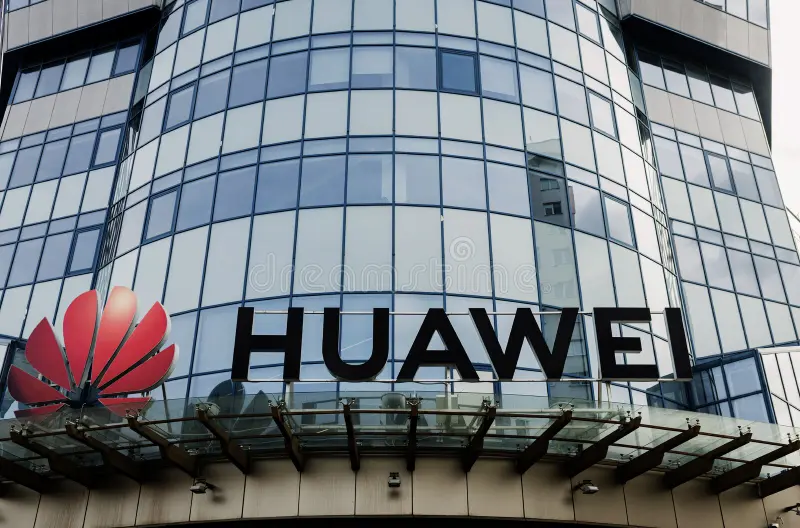
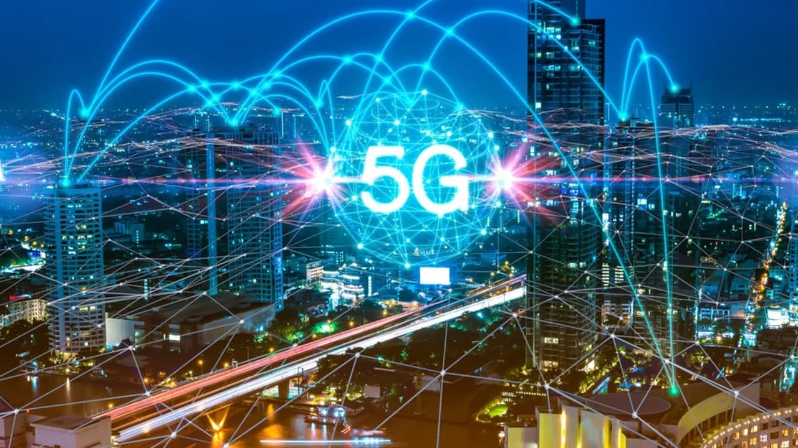

<html>
<title>Huawei Tanıtım</title>
<link rel="stylesheet" type="text/css" href="../genel_bolumler.css">
<meta charset="UTF-8">
</html>


<body>


<div class="navigasyon_bar">

<a href="../index.html" > 
	</img>
	</a>

	<a href="../huawei_hakkında/huawei_hakkinda.html"> <div class="ic_div"> Huawei Hakkında </div> </a>
	<a href="../urunler/urunler.html"> <div class="ic_div"> Ürünler </div> </a>

	<a href="../sürdürülebilirlik/sürdürülebilirlik.html"> <div class="ic_div"> Sürdürülebilirlik </div> </a>

	<a href="../eğitim/egitim.html"> <div class="ic_div"> Eğitim </div> </a>
	<a href="../haberler/haberler.html"> <div class="ic_div"> Haberler </div> </a>

</div>


<div class="huawei_hakkinda_banner">

<h1 class="ana_baslik">Şirketimiz </h1>
<p class="ana_paragraf">
Vizyonumuz ve misyonumuz, tamamen bağlantılı, akıllı bir dünya için dijitali her bireye, eve ve kuruluşa ulaştırmaktır.
</p>
</div>


<div class="sidebar" tabindex="0">
  <div class="side_liste">

    <div class="side_sol_liste ">
      <ul>
       <a href="https://www.huawei.com/en/events/huaweiconnect?utm_source=chatgpt.com"> <li> 
 18.09.2025</li></a>
        <a href="https://www.huawei.com/tr/news/2025/huawei-ict-day-2025te-endustriyel-donusumun-yol-haritasini-paylasti"><li>
 18.04.2025</li></a>
        <a href="https://solar.huawei.com/en/news/2025/huawei-digital-power-drives-huawei-connect-europe-fusionsolar-partner-summit-europe-2025/?utm_source=chatgpt.com"><li>
05.11.2025</li></a>
      </ul>
    </div>

    <div class="side_sag_liste ">
      <ul>
        <a href="https://www.huawei.com/tr/news/2023/huawei-connect-etkinliginde-basarili-bulut-uygulamalari-paylasildi"><li>
2023.11.17</li></a>
        <a href="https://www.tahawultech.com/news/hdc%C2%B72024-huawei-mea-ecosystem-summit-redefining-digital-bridges/?utm_source=chatgpt.com"><li>
21.11.2024</li></a>
        <a href="https://activity.huaweicloud.com/intl/en-us/partner_connection.html?utm_source=chatgpt.com"><li>
24.03.2024</li></a>
      </ul>
    </div>

  </div>

</div>


<h1 class="baslik">Huawei kimdir?</h1>

<p class="paragraf">
1987 yılında kurulan Huawei, bilgi ve iletişim teknolojisi (BİT) altyapısı ve akıllı cihazlar alanında önde gelen küresel bir sağlayıcıdır. Yaklaşık 208.000 çalışanımızla 170'ten fazla ülke ve bölgede faaliyet gösteriyor ve dünya çapında üç milyardan fazla insana hizmet veriyoruz. Tamamen bağlantılı, akıllı bir dünya için dijital teknolojiyi her bireye, eve ve kuruluşa ulaştırmaya kararlıyız. 
</p>


<h1 class="baslik"> Araştırma ve İnovasyon </h1>
<p class="paragraf"> 
Bugün, değişimlerin nefes kesici bir hızla gerçekleştiği dinamik ve çalkantılı bir dünyada yaşıyoruz. Zorluklar büyük olsa da, önümüzdeki fırsatlar eşsiz. Huawei'de, inovasyonun iki temel itici gücü var: bilim ve teknoloji ve müşteri ihtiyaçları. Hem ticari değer hem de pazar talepleri, inovasyonumuzu yönlendiriyor ve bilim ve teknolojiye nasıl yatırım yapacağımızı belirliyor. Teknolojideki atılımlar ise, müşteri ihtiyaçlarını canlandırıyor ve müşterilerimiz için daha büyük değer yaratmamızı sağlıyor.  
<a href="" >daha fazla bilgi edinin </a>
</p>


<h1 class="baslik"> Açıklık, İşbirliği ve Ortak Başarı </h1>

<p class="paragraf"> 
Huawei, kamu ve özel sektör, akademi, araştırma enstitüleri ve kullanıcılar da dahil olmak üzere çeşitli alanlardaki endüstri kuruluşları ve ekosistem ortaklarıyla açık iş birliğine devam edecektir.
<a href="" >daha fazla bilgi edinin </a>
</p>

<h1 class="baslik"> Kalite Politika </h1>

<ul class="siralama">

<li> Unutmayın ki kalite, Huawei'nin varlığını sürdürmesinin temelidir ve müşterinin Huawei'yi tercih etmesinin sebebidir.
</li>
<li> Müşterilerimizin gereksinimlerini ve beklentilerini Huawei'nin tüm değer zincirine doğru bir şekilde iletiyor, böylece birlikte kalite inşa ediyoruz;
</li>
<li> Kurallara ve süreçlere saygı duyarız ve işleri ilk seferde doğru yaparız; Sürekli gelişim için dünya çapındaki çalışanlarımızın potansiyelini ortaya çıkarırız;
</li>
<li> Müşterilerimizle birlikte fırsatlar ve riskler arasında denge kurarak, ihtiyaçlarına hızlı bir şekilde yanıt veriyor ve sürdürülebilir büyüme sağlıyoruz.
</li>
<li> Müşterilerimize kalite güvenceli ürünler, hizmetler ve çözümler sunmayı ve her bir müşterimiz için değer yaratma konusundaki kararlılığımızı sürekli olarak deneyimlemelerini sağlamayı taahhüt ediyoruz.
</li>

</ul>




<p class="paragraf"> 

🏢 Tepegözten Küresel Liderliğe: Huawei'nin Yükseliş Hikayesi
1987 yılında, eski bir Çin Ordusu subayı olan Ren Zhengfei, Shenzhen'deki küçük bir apartman dairesinde sadece 5,600 yuan (yaklaşık 2,500 dolar) sermaye ile Huawei'yi kurdu. "Huawei" (华为) ismi "Çin'in Geleceği İçin Çalışmak" anlamına gelir ve bu vizyon, şirketi sadece 35 yılda dünyanın en büyük telekomünikasyon ekipmanı üreticisi yapacaktı.
"Huawei, sadece bir şirket değil; Çin'in teknolojik bağımsızlık mücadelesinin sembolüdür."

</p>
<br>

<ul  class="siralama">

<li>🌍 Küresel Devi ve Rakamlarla Huawei </li>
<li>🌐 170+ Ülke: Faaliyet gösterdiği ülke sayısı </li>
<li>👥 207,000 Çalışan: Dünya genelindeki iş gücü (2023) </li>
<li>💰 100+ Milyar Dolar: Yıllık gelir </li>
<li>🏆 #1: Dünya'nın en büyük patent başvuru sahibi şirket (ARDIC) </li>
<li>📱 300+ Milyon: Yıllık akıllı cihaz sevkiyatı </li>

</ul>


<h1 class="baslik"> Teknolojik Devrim: Huawei'nin İnovasyonları  </h1>

<h2 class="paragraf"> 1. 5G ve Ötesi: 5.5G Teknolojisi </h2>
<p class="paragraf"> 
Huawei, dünya genelinde 5G altyapısının %35'inden fazlasına sahiptir. Şimdi ise 5.5G (5G Advanced) teknolojisiyle saniyede 10 gigabit hızlara ulaşmayı hedefliyor. Otonom maden kamyonlarından akıllı cement fabrikalarına kadar her şeyi bu teknoloji yönetiyor.
</p>
<h2 class="paragraf"> 2. Kirin Çipsetleri: Kendi İşlemcinizi Kendiniz Üretin </h2>
<p class="paragraf"> 
ABD yaptırımlarına rağmen Huawei, Kirin 9000s ve sonrasında gelen yonga setleriyle kendi çip üretim kapasitesini kanıtladı. 7nm ve altı teknolojilerde çalışan bu işlemciler, Mate 60 Pro gibi amiral gemisi telefonlarda güçlü performans sunuyor.
</p>
<h2 class="paragraf"> 3. HarmonyOS (Hongmeng OS) </h2>
<p class="paragraf"> 
Google Android yasağına karşı geliştirilen HarmonyOS, artık sadece Huawei telefonlarda değil; akıllı ev eşyalarından otomobillere kadar geniş bir ekosistemde çalışıyor. 500+ milyon cihaz tarafından kullanılan bu işletim sistemi, "1+8+N" stratejisiyle her şeyi birbirine bağlıyor.
</p>


<div class="divler">
<a href="https://e.huawei.com/tr/industries/education/smart-classroom">
<div class="div1"> 


<h1 class="div_h1">Akıllı Sınıf </h1>
<p class="ic_p">
Hibrit, iş birliğine dayalı ve bütünleşik bir eğitim platformu oluşturun.
</p> 

</div> 
</a>


<a href="https://e.huawei.com/tr/topic/storage/gartner-peer-insights-oceanprotect">
<div class="div2"> 


<h1 class="div_h1">5G Teknolojisi </h1>
<p class="ic_p">
2025 Gartner® Peer Insights™'ta Müşterilerin Tercihi Seçildi.
</p> 

</div>
</a>


</div>


<h1 class="baslik"> Üç Sütunlu İmparatorluk </h1>
<h2 class="paragraf"> Huawei üç ana iş kolunda faaliyet gösterir: </h2>
<h3 class="paragraf">📱 Tüketici İş Birimi (BG) </h3>
<ul  class="siralama">
<li>Mate ve P serisi amiral gemisi telefonlar</li>
<li>MateBook dizüstü bilgisayarlar</li>
<li>MatePad tabletler</li>
<li>GT serisi akıllı saatler</li>
<li>FreeBuds kulaklıklar</li>

</ul>
<h3 class="paragraf"> 🏭 Kurumsal İş Birimi (Enterprise BG)</h3>
<ul  class="siralama">
<li>Sunucular ve bulut çözümleri</li>
<li>Veri merkezleri</li>
<li>Yapay zeka platformları (ModelArts)</li>
<li>Akıllı şehir çözümleri </li>
</ul>
<h3 class="paragraf">📡 Taşıyıcı İş Birimi (Carrier BG) </h3>
<ul  class="siralama">
<li>5G baz istasyonları</li>
<li>Fiber optik ağ ekipmanları</li>
<li>Mikro-dalga iletişim sistemleri</li>

</ul>


<h1 class="baslik">Mücadele ve Dayanıklılık: "Hayatta Kalma Modu" </h1>
<p class="paragraf"> 
2019-2024 yılları arasında Huawei, ABD tarafından uygulanan en ağır teknoloji yaptırımlarıyla karşı karşıya kaldı: </p>
<ul  class="siralama">
<li>Google servislerine erişim yasağı </li>
<li>Çip üretiminde ambargo </li>
<li>5G ekipmanlarının birçok ülkede yasaklanması </li>
</ul>
<h3 class="paragraf"> Buna rağmen Huawei, "Hayatta Kalma ve Kalkınma" stratejisiyle: </h3>
<ul  class="siralama">
<li>Kendi HarmonyOS işletim sistemini geliştirdi</li>
<li>AppGallery ile kendi uygulama ekosistemini kurdu</li>
<li>HMS (Huawei Mobile Services) ile Google alternatifi sundu</li>
<li>Yerli tedarik zinciri oluşturarak Kirin çiplerini geri getirdi</li>
</ul>
<p class="paragraf"> Bu savaş, Huawei'yi sadece daha bağımsız ve güçlü kıldı. </p>

<h1 class="baslik">🌟 Gelecek Vizyonu: Akıllı Dünya 2030 </h1>
<h2 class="paragraf"> Huawei'nin gelecek stratejisi 5 temel alanda yoğunlaşıyor: </h2>
<ul  class="siralama">
<li>🤖 Yapay Zeka: Her cihazda, her ağda AI entegrasyonu </li>
<li>🌐 5.5G/6G: Holografik iletişim ve sanal gerçeklik için altyapı </li>
<li>🚗 Akıllı Araçlar: HarmonyOS tabanlı otomobil işletim sistemleri (Aito, Avatr markalarıyla) </li>
<li>🏠 Tam Bağlantılı Yaşam: IoT cihazları arasındaki sorunsuz entegrasyon </li>
<li>🌱 Yeşil Teknoloji: Daha az enerji tüketen, sürdürülebilir teknolojiler </li>
</ul>

<p class="paragraf"> 
"Yarın için teknoloji üretmek, insanlığın potansiyelini açığa çıkarmak demektir." - Ren Zhengfei
</p>


<footer class="alt-banner">
	<h1>HUAWEI</h1>


<div class="ustbar">

	
<a href="https://www.facebook.com/HuaweiEnterprise" > 
	</img>
	</a>
<a href="https://www.linkedin.com/company/huawei-enterprise" > 
	</img>
	</a>
<a href="https://x.com/HUAWEient" > 
	</img>
	</a>
<a href="https://www.instagram.com/huaweient/" > 
	</img>
	</a>
<a href="https://www.youtube.com/user/HuaweiEnterprise" > 
	</img>
	</a>
	
</div>


<div class="foot_divs">
<a href="https://app.huawei.com/eplus/front/index.html#/download">	
<div class="foot_div1">

Huawei e+ Uygulaması
</div> </a>
<a href="https://app.huawei.com/eplus/soho/front/index.html#/download">
<div class="foot_div1">

Huawei eKit Uygulaması
</div></a>
<a href="https://m.support.huawei.com/intl/prod/enterprisemobile/brochure/index_en.html">
<div class="foot_div1">

Huawei HiKnow Uygulaması
</div>  </a>
<a href="https://app.huawei.com/eplus/smb/front/index.html#/download?countryCode=Global">
<div class="foot_div1">

Huawei eFly Uygulaması
</div> </a>

</div>

<p class="foot">
<a href="https://www.huawei.com/en/contact-us" > Bize Ulaşın </a>
&nbsp;&nbsp;&nbsp;
<a href="https://www.huawei.com/en/legal"> Kullanım Şartları </a>
&nbsp;&nbsp;&nbsp;
<a href="https://www.huawei.com/en/privacy-policy"> Gizlilik Politikası </a> &nbsp;&nbsp;&nbsp;
<a href="https://www.huaweicloud.com/intl/en-us/"> Huawei Bulut </a>

     	<p class="last_foot">© 2026 Tüm hakları saklıdır</p>
    </footer>


</body>